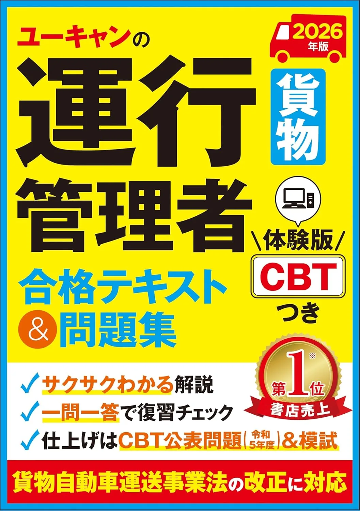

おすすめテキスト3選【貨物・旅客2026】
ユーキャン貨物・翔泳社貨物・翔泳社旅客の3冊を比較。5科目12/20・100問180分を前提に1冊選びを解説します。
3冊を比較するテキスト
運行管理者試験の制度理解から学習計画・演習・直前対策まで、受験フェーズ別の進め方をまとめています。用語の意味・比較・数値は用語解説（知識ハブ）、問題演習は過去問一覧からどうぞ。
2026年度版の比較記事から、テキスト・問題集・CBT対策の選び方へ。
全43記事。キーワード検索とジャンルで絞り込めます。
運行管理者試験の制度入口。試験センター公表の30問・90分CBT、18/30と分野別最低正解、貨物・旅客区分、インターネット申請と6,660円を整理します。
運行管理者試験センター公式サイトの使い方。5メニューの役割、要項HTMLと受験案内PDFの使い分け、インターネット申請・CBT専用サイトへの移行タイミングを整理します。
運行管理者試験の受験資格。実務1年ルートと基礎講習修了ルートの要件、修了予定申込の期限、承認メールと区分一致の注意を要項ベースで整理します。
運行管理者試験の実務1年要件。試験日前日基準の算定、対象となる事業用自動車、不算定3業務、承認者5項目とメール承認の流れを要項・受験案内PDFベースで解説します。
運行管理者試験の年間スケジュール。令和8年第1回の6日付、受験案内PDFの4締切、審査7～10日から会場予約までの流れ、30問90分CBT当日の目安を要項ベースで整理します。
運行管理者試験の受験手数料。6,000円（非課税）とシステム利用料660円の内訳、再受験860円・結果レポート140円、3つの支払方法と返金不可ルールを要項ベースで整理します。
運行管理者試験のインターネット申込手順。受験申請サイト・書類審査7～10日・CBT会場予約・6,660円支払までの流れとよくある入力ミスを要項⑥ベースで整理します。
運行管理者試験の申込締切前チェック。PDF4締切の転記、14日前・7日前・予約締切前の確認、CBT予約・6,660円支払と無効申込の典型を自分用チェック表形式で整理します。
運行管理者CBT会場の選び方。要項⑤の試験地リストと定員制、審査完了後の予約手順、第1～3候補のメモと受験確認書の確認項目を整理します。
運行管理者試験の公表合格率。結果発表ページの3列の読み方、貨物・旅客別統計、35%前後と演習到達目標18/30の関係、難易度の3要因とルート別の落とし穴まで1本で整理します。
運行管理者試験の合格基準。要項④の基準①18/30と基準②分野別最低、8/4/5/6/7付き演習ログの書き方、19/30でも落ちる判定例を整理します。
運行管理者試験のCBT形式を要項ベースで整理。30問90分・四肢択一・8/4/5/6/7配分、画面操作の要点、100問180分旧表記との違いを解説します。
運行管理者試験の科目構成を1本で整理。要項④の5分野8+4+5+6+7、貨物・旅客の法令差、教材目次との対応、②＞総得点＞出題比の優先順位と（2）4問の罠まで解説します。
運行管理者試験CBTの時間配分戦略。90分30問・1問3分、30/60/75分チェックポイント、分野別24/12/15/18/21分、82分完走＋8分見直しの運用を解説します。
運行管理者試験センター要項PDFの読み方。要項①～⑥の45分×2回ルート、30問90分・18/30・8/4/5/6/7の転記6項目、読了後の次アクション結線、申込前の改定確認手順を解説します。
運行管理者試験の出題範囲と過去問の対応。要項④・past.html・市販過去問の3層、8/4/5/6/7タグ付け、範囲外論点の除外、30問演習への落とし込みを解説します。
運行管理者試験の学習計画の立て方。CBT日から84/56/28日前逆算、30問90分ベースライン、②未達2分野60%配分、期間別計画記事への振り分けを解説します。
運行管理者試験の3か月（84日）学習計画。週10時間・120時間、12週4フェーズ、30問ベースライン→②弱点→90分通し、CBT逆算の週次一覧を解説します。
運行管理者試験の6か月（168日）学習計画。26週・週6～8時間、30問ベースライン→分野定着→18/30+②→90分通し、CBT逆算の5フェーズを解説します。
運行管理者試験の社会人向け学習計画。週8時間・残業週4時間の2モード、平日ブロック配分、18/30+分野②達成とCBT逆算、3か月・6か月計画との切替を解説します。
運行管理者試験の独学の始め方。初日30分で要項確認、第1週で教材1冊と演習開始、第2週末30問90分ベースライン、初学者・3か月計画への振り分けを解説します。
運行管理者試験の独学でよくある失敗5パターン。100問180分・教材増殖・計測なし・18/30だけ見る・区分未確認、30問90分ベースラインと②60%配分での修正手順を解説します。
運行管理者試験のテキストと過去問の優先順位。過去問だけでは足りない理由と、週次4:4:2（テキスト・過去問・解き直し）、フェーズ別配分、8/4/5/6/7タグ付き30問演習、②弱点への振替を解説します。
運行管理者試験のおすすめ問題集3選（2026年度版）。ユーキャン過去6回・成美堂貨物・成美堂旅客を比較。30問90分・18/30を前提に、演習1冊の選び方と解き直しを具体例付きで解説。
運行管理者試験の独学向けおすすめテキスト3選（2026年度版）。ユーキャン貨物・翔泳社貨物・翔泳社旅客を比較。30問90分・18/30を前提に1冊選びと週次計画を具体例付き解説。
運行管理者試験の過去問の使い方。解く→記録→テキスト/用語へ戻る3ステップ、past.htmlと市販集のローテ、30問90分計測と②判定、CBT56日前からの量調整を解説します。
運行管理者試験の分野別過去問の解き方。②未達2分野へ20問/週、（1）8・（2）4・（3）5・（4）6・（5）7の演習目安とpast.html照合、30問計測での振替を解説します。
運行管理者試験CBTの時間計測演習。分野別12～24分から30問90分週1回、82分完走記録・3分超ノート、時間配分記事との役割分担を解説します。
運行管理者試験のCBT対策問題集3選（2026年度版）。公論重要問題厳選・旅客版・令和8年8月CBT版を比較。30問90分・18/30＋分野②を前提にCBT6週前の使い方を具体例付き解説。
運行管理者試験（貨物）の事業法（1）8問基礎。事業区分と許可・登録・届出、事業計画変更の認可と届出、運行管理者の選任数と業務、記録の保存期間を実例で解説します。
運行管理者試験CBTの車両法（2）4問基礎。登録・車検の有効期間・日常点検・3か月/12か月の定期点検・整備管理者・保安基準の数値と区分、0/4罠と②判定、演習の進め方を解説します。
運行管理者試験CBTの道路交通法（3）5問。免許区分と重量、大型貨物の速度、駐停車禁止距離、過労運転の下命容認、事故時措置を数値で解説します。
運行管理者試験CBTの労働基準法（4）6問基礎。改善基準告示2024年4月改正の拘束13時間・休息11時間・連続運転4時間など数値とひっかけ、②判定と演習の進め方を解説します。
運行管理者試験CBTの実務（5）7問の中身を解説。点呼の種類とアルコール検知器、SAS等の健康管理、停止距離・内輪差の運転特性、速度・燃費の計算、②2問以上の足切りまで。
運行管理者試験の用語解説ハブ（/terms/）の使い方。5分野ハブと8/4/5/6/7対応、週10語の取り込み、過去問演習との往復、②未達分野からの回遊を解説します。
運行管理者試験の間隔復習（スペースドリピティション）。誤答ノート1行形式、3・7・14日解き直し、4:4:2の解き直し20%、②未達分野の短周期とCBT直前圧縮を解説します。
運行管理者試験CBTの試験前日チェックリスト。受験確認書・本人確認書類・会場ルート、受付締切前の到着、新規停止と解き直し10問、当日記事との役割分担を解説します。
運行管理者試験CBTの当日持ち物。顔写真付き本人確認書類・受験確認書、禁止品一覧・会場支給端末、持ち忘れ対応と前日記事との分担を解説します。
運行管理者試験CBTの当日の流れ。受付締切前到着・本人確認・操作説明、90分30問・82分+8分見直し、前日・持ち物記事との分担を解説します。
運行管理者試験合格後の手続き。結果発表日から3か月以内の資格者証交付申請、事業者の選任届出、貨物・旅客区分照合、合格後登録記事との役割分担を解説します。
運行管理者試験合格後の資格者証交付申請。試験結果通知書同封案内・270円印紙・本人確認書類、支援サービスと受理後1か月、合格後手続き記事との役割分担を解説します。
運行管理者試験の再受験戦略。30問90分の再受験ルール、8/4/5/6/7ログから弱点2分野を特定、学習60%・解き直し50%の週次配分、6,860円再申込と関連記事の役割分担を解説します。
運行管理者試験要項の更新追跡。月1回・申込前・改定公表の3タイミング、8/4/5/6/7差分1枚・18/30+②計画反映、要項読み方記事との役割分担を解説します。